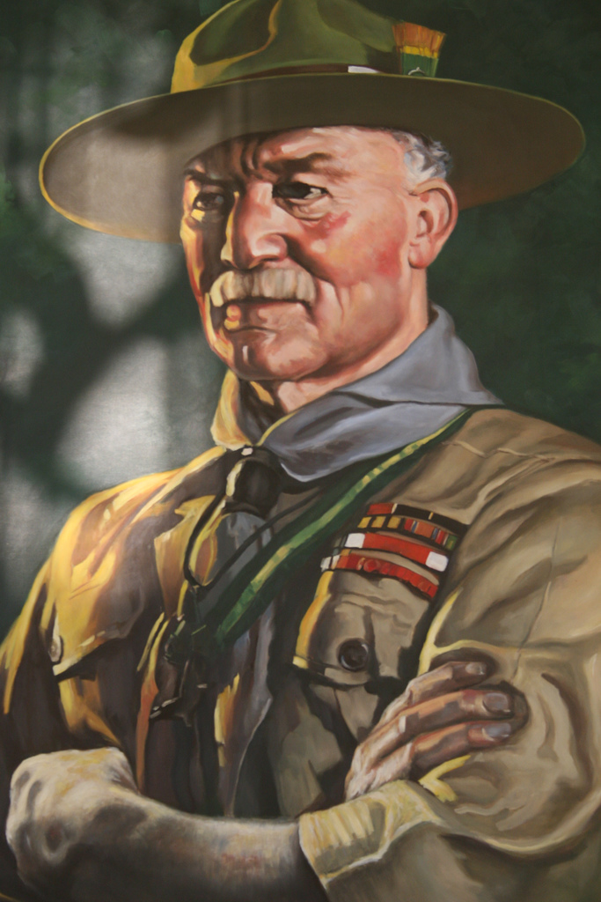
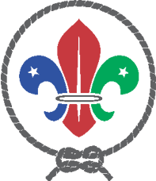

Основателем движения скаутов считается сэр Роберт Стефенсон Смит Баден-Пауэлл. В 1899 году полковник Баден-Пауэлл был назначен комендантом крепости Мафекинг в Южной Африке, которая после начала англо-бурской войны была осаждена армией буров. В гарнизоне было чуть больше тысячи солдат, и полковник организовал вспомогательную воинскую часть из местных мальчишек, которые взяли на себя в том числе разведку и доставку донесений через позиции врага. Полковник был поражен, что мальчики воевали не хуже взрослых, отличались отвагой, хитроумием, исполнительностью. Благодаря своим кадетам Баден-Пауэллу удалось продержаться с крошечным гарнизоном 207 дней, пока не подошло подкрепление. С этого момента полковник пришел к выводу, что начинать готовить военных разведчиков надо с детства. Став генералом и возвратившись в Англию, Баден-Пауэлл основал движение скаутов в 1907 году в Великобритании. В 1907 году был проведен первый лагерь на острове Браунси (Великобритания), а в 1908 году была издана всемирно известная книга «Scouting for boys». Новаторство скаутинга было в том, что в нем соединили детей и взрослых в одной организации, в процессе совместной деятельности, общей длительной игры в разведчиков, в стремлении быть полезными другим людям, природе и миру в целом. У Баден-Пауэлла отношения между взрослыми и детьми строились как равноправные, где взрослый и ребенок играли каждый свою роль, ребенок добровольно соглашался с позицией и ролью взрослого, как старшего товарища, более знающего, более умелого. Взрослый вел за собой младшего. Так в скаутской организации отчасти была решена проблема антагонизма между взрослыми и детьми. Баден-Пауэлл понял стремление детей и подростков к неформальному общению, он уловил их желание объединиться между собой для реализации своих интересов и потребностей. Универсальность системы скаутинга заключается в её саморазвитии. Она соединяла подростков и взрослых в одну организацию независимо от религиозных конфессий, различных рас и этносов, не только католической Европы, но и православных народов, мусульманского мира. Фактически скаутинг заложил основы педагогики нового типа, которая впоследствии в СССР получила название неформальная педагогика в противовес формальному (обязательному) школьному образованию. Однако изобретение самой идеи принадлежит не Баден-Пауэллу, а писателю и художнику Эрнесту Сетон-Томпсону, создавшему первый в мире детский отряд «Woodcraft Indians (англ.)русск.» — «лесных индейцев». Историю создания отряда Сетон-Томсоном красочно описал в своей биографии, в главе «Знатоки леса» В 1906 году Сетон-Томпсон отправил свои записки Баден-Пауэллу, который во многом основывался на опыте писателя, создавая скаутов. Баден-Пауэлл создал совершенно новую общественную молодежную организацию, за эти заслуги был возведён королём Англии Георгом V в звание барона с титулом «Лoрд Баден-Пауэлл оф Гилвелл» . Изначально скаутинг был задуман для подготовки мальчиков к службе в английской армии, и военные разных стран во многом приняли его систему. В первое время скаутинг как метод воспитания молодежи допризывного возраста распространялся среди стран-участниц Антанты, но затем он вышел за эти рамки, получил более широкое распространение среди стран мира из-за своей универсальности. К 1909 году в Англии уже насчитывалось 14 000 скаутов. В 1910 году возникла "параллельная" бойскаутам организация девочек и девушек — «гёрл-гайдов». Большой вклад в движение скаутов внес художник Пьер Жубер (Pierre Joubert), сам ставший скаутом в 14 лет. В течение десятилетий он создавал великолепные иллюстрации к книгам и журналам о скаутах. На развитие скаутского движения оказали влияние также работы Дэниела Картера Бёрда.
В Азербайджане Скаутинг появился с 1918 года, однако, с приходом Советской власти в 1922 году, Скаутинг сменился на всеми известное движение пионеров. По своей сути это были родственные и очень похожие организации, но все же отличные друг от друга. Различия в первую очередь проявляются в том, что Скаутом может быть каждый, в независимости от его расовой, религиозной принадлежности. Скаутинг - это не правительственная, не религиозная организация. Воссоздать Скаутинг удалось лишь 11 октября 1997, основателем и президентом которой по сей день является Намик ДЖАФАРОВ. Начиная с 1998, года Скауты Азербайджана провели ряд лагерей, в том числе и международных. Со вступлением Ассоциации Скаутов Азербайджана во Всемирную Организацию Скаутского Движения ВОСД (World organization of Scout Movement WOSM) открылась возможность участия в различных международных мероприятиях, лагерях, курсах, семинарах. За короткий срок существования представители организации побывали в ряде стран, таких как: Швейцария, Великобритания, Чили, Россия, Украина, Египет, Молдова, ОАЭ, Турция, Таиланд, Мексика, Тайвань, Греция, представляя как Ассоциацию, так и Азербайджан. Ассоциация Скаутов Азербайджана создана 11 октября 1997. Главная цель организации - содействие в воспитании достойных граждан страны посредством Скаутского Движения: Организация досуга. Проведение молодежных лагерей. Организация программ по духовному и физическому воспитанию детей, подростков. Защита их интересов. 20 августа 2000 года Ассоциация Скаутов Азербайджана В ступила во Всемирную Организацию Скаутского Движения (ВОСМ). На сегодняшний день в Ассоциация Скаутов Азербайджана более 2 000 скаутов. Созданы филиалы во многих районах Азербайджана. Так Скаутинг, по мимо Баку, охватил районы: Исмаиллы, Нахчивань, Барды и др. Главной целью на сегодняшний день является - распространение Скаутинга во всем Азербайджане. Так например, еще в Апреле 2004 лидерами АСА были организованны тренинг курсы о Скаутинге и его роли в жизни человека и летом того же года В Шекинском районе был проведен 3х дневный Скаутский лагерь, по окончанию которого скауты Бардинского района приняли Скаутскую клятву, тем самым вступив в огромную Скаутскую семью насчитывающая более 28,000000 скаутов из 216 стран мира. Лого Ассоциации Скаутов Азербайджана представляет 3 лепестка лилии связанные “узлом дружбы” и 2 пятиконечные звезды, где: 1. Лепестки лилии характеризуют 3 основных Скаутских принципа: 1) Долг пред Аллахом и Азербайджаном. 2) Долг пред другими. 3) Долг перед собой. 2. Две пятиконечные звезды характеризуют душевную чистоту, истину и 10 Скаутских законов. 3. Узел дружбы характеризует дружбу всех скаутов в мире (такую же прочную как и этот узел) Скаутское обещание: Клянусь своей честью, что сделаю все от себя зависящее, что бы выполнить свой долг пред Аллахом и Азербайджаном, помогать другим в любое время и подчинятся скаутскому закону. Помимо скаутских принципов существуют так же 10 скаутских принципов, которые так же наставляют скаута быть бережливым, пунктуальным, ответственным, уважению к взрослым. Большое значение в воспитании и личностном развитии имеет скаутская структура - Каб-скауты, скауты, лидеры, роверы, скаут мастера итд. Вступив в скауты каждому скауту нужно выбрать себе патруль (маленькая группа скаутов) со своим лидером, атрибутикой и правилами. Это позволяет уже с ранних лет обучить ребенка (юношу/девушку) как нужно житьи вести себя в обществе. Подготавливает каждого к правильной ориентации в жизни, стимулирует личностное развитие а так же заботу о других, не обращая ни какого внимание на социальные различая. Лидер - Сформированный скаут, который может и является ответственным за свой патруль, а следовательно и правильному воспитанию своих скаутов в патруле. Скаутский Отряд - Группа различных патрулей. Во главе отряда стоит опытный скаут мастер который ответственен за лидеров и скаутов. Но его основная задача -помочь лидерам патрулей воспитать свои лидерские навыки.
